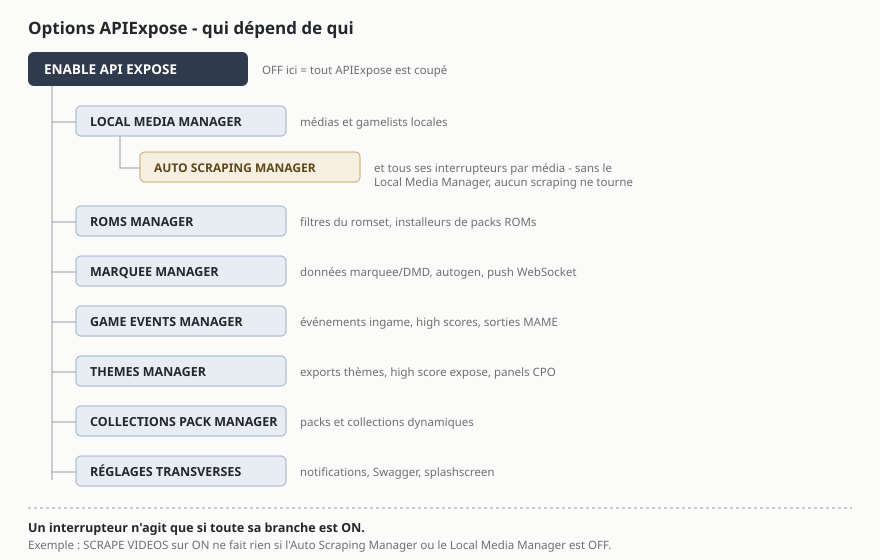

Menus et options
Toutes les options APIExpose vivent dans les menus d'EmulationStation, sous EXTENDED OPTIONS (Menu principal → Paramètres de jeux avancés). Cette page les documente toutes, sous-menu par sous-menu, dans l'ordre où elles apparaissent.
L'interrupteur général
ENABLE API EXPOSE active ou désactive l'ensemble des fonctions avancées du plugin. Tout le reste dépend de lui.
Les interrupteurs forment une hiérarchie : chaque manager est la porte d'entrée de ses options, et une option n'agit que si toute sa branche est active.

LOCAL MEDIA MANAGER
Le gestionnaire de médias local : quels médias sont liés dans vos gamelists et comment ils sont choisis.
| Option | Choix | Effet |
|---|---|---|
ENABLE LOCAL MEDIA MANAGER |
on/off | Active la gestion locale des médias, les liens canoniques et les mises à jour de gamelists. |
MAIN IMAGE |
SCREENSHOT, SCREENTITLE, MIX 1/2, BOX 2D/3D, FANART | Le média affiché comme image principale de chaque jeu. |
LOGO / MARQUEE |
WHEEL HD, LOGO, MARQUEE, SCREEN MARQUEE (SMALL), STEAMGRID, FIGURINE, CARTRIDGE, LABEL | Le média lié dans la balise marquee des gamelists. |
THUMBNAIL |
BOX 2D/3D, FIGURINE, CARTRIDGE, LABEL, SCREENSHOT, SCREENTITLE, MIX 1/2 | Le média lié comme vignette. |
WHEEL HD STYLE |
CARBON, STEEL | La variante de wheel utilisée quand LOGO / MARQUEE = WHEEL HD. |
MEDIA REGION MODE |
MATCH ROM REGION, CONTENT REGION PROFILE, INTERFACE LANGUAGE | Comment choisir les médias localisés : région de la ROM d'abord (défaut), profil de région, ou langue de l'interface. |
LOGO / WHEEL LOCALIZATION |
USER LANGUAGE, MATCH ROM REGION, CONTENT REGION PROFILE | Les logos/wheels privilégient votre langue (défaut) ou la région d'origine de la ROM. |
CLEAN LEGACY ROMS MEDIA |
on/off | Au démarrage, propose (avec confirmation Windows) de migrer les anciens médias du dossier roms vers le store canonique, en ne supprimant que les doublons identiques (hash vérifié). |
AUTO SCRAPING MANAGER
Le scraping : local d'abord, distant si besoin, chaque type de média activable séparément.
| Option | Effet |
|---|---|
ENABLE AUTO SCRAPING MANAGER |
Active le scraping local puis distant, avec mise à jour de la fiche en temps réel quand un vrai changement est trouvé. (activé par défaut) |
ENABLE SCREENSCRAPER |
Autorise ScreenScraper à compléter le store quand le scraping local ne suffit pas. |
TRANSLATE DESCRIPTIONS |
Traduit les descriptions anglaises quand votre langue n'a pas de description localisée. |
ENABLE SCRAPING QUEUE |
File de scraping en tâche de fond, à basse priorité — elle se met en pause pendant le scraping live. |
REMOTE SCRAPE AFTER LOCAL |
Le scraping distant ne démarre que si la passe locale laisse des manques. |
SCRAPE EXACT LOCAL MEDIA |
Va chercher le média régional exact quand un emplacement visible n'est servi que par un fallback local. |
REFRESH GAME VIEW AFTER SCRAPE |
Rafraîchit la fiche du jeu courant après un scrape distant réussi. |
NOTIFY MEDIA SCRAPE |
Notifie à la fin d'un scrape lourd : manuel, magazine ou vidéo. |
Chaque type de média a ensuite son interrupteur : SCRAPE MARQUEES, SCREEN MARQUEES, SMALL SCREEN MARQUEES, STEAMGRID, MIX, MAPS, MANUALS, MAGAZINES, VIDEOS, NORMALIZED VIDEOS et BEZELS.
Fichiers volumineux
Les vidéos sont activées par défaut ; manuels, magazines et vidéos normalisées restent des opt-in. Ces fichiers sont plus lourds que les autres médias : désactivez-les si l'espace disque est un souci. Si un média est choisi comme source visible (ex. MARQUEE dans LOGO / MARQUEE), son scraping reste prioritaire même comme simple enrichissement.
ROMS MANAGER
Le nettoyeur de listes : profils prêts à l'emploi + filtres explicites par catégorie.
| Option | Choix | Effet |
|---|---|---|
ENABLE ROMS MANAGER |
on/off | Active le module de gestion et filtrage du romset. |
ROMS PROFILE |
CASUAL GAMER, GAMER, HARD-GAMER, PRO-GAMER, RETROACHIEVER, LOCALIZED PLAYER, ARCADE PURIST, ARCADE GAMER, HISTORIAN, PRESERVATIONIST, HOMEBREW PLAYER, MODDER, HACKER | Un préréglage nommé qui positionne tous les filtres d'un coup — les options restent visibles et ajustables ensuite. |
NEVER HIDE FAVORITES |
on/off | Vos favoris ne sont jamais masqués par les filtres. (activé par défaut) |
LANGUAGE |
SHOW ALL / SHOW ONLY MY LANGUAGE | Masque les autres langues quand une version dans la vôtre existe. |
REGION |
SHOW ALL / SHOW ONLY MY REGION | Masque les autres régions quand une version de la vôtre existe. |
RETROACHIEVEMENTS GAMES |
NO FILTER / ALWAYS SHOW / SHOW ONLY | ALWAYS SHOW protège les jeux compatibles RA ; SHOW ONLY masque tout jeu sans cheevosId. |
ROM VERSION |
STABLE, LATEST, ORIGINAL, ENHANCED | Comment départager les variantes d'un même jeu. |
Puis chaque catégorie se contrôle en SHOW/HIDE : OFFICIAL GAMES, CLONES, PROTOTYPES, DEMOS, BETA / ALPHA, USEFUL PATCHES (bugfix, QoL, widescreen…), HACKS AND MODS, CHEATS AND TRAINERS, BOOTLEGS AND PIRATES, UNLICENSED, HOMEBREWS AND AFTERMARKET, ADULT, CASINO AND GAMBLING, MAHJONG, QUIZ, NON-GAMES (BIOS, devices…), UNKNOWN ROMS, ARCADE TESTS AND DIAGNOSTICS.
Options avancées du romset (selon version)
Le module comprend aussi : VARIANT MODE (OFF / DISPLAY ONLY / HIDE VARIANTS — DISPLAY ONLY analyse sans rien écrire), TRANSLATIONS (une traduction peut devenir la variante principale si elle correspond à votre langue), ARCADE HANDLING (parent seul, meilleur clone, groupe parent/clones), ROM SET OUTPUT (rapport seul, balise hidden des gamelists, collection, ou filtre API) et ROM SET DEBUG REPORT (rapport JSON des décisions et scores).
Installation de packs (Roms Pack Manager)
| Option | Effet |
|---|---|
ROM INSTALLER |
Installe au démarrage les packs ROMs/médias/gamelists trouvés dans package-installer\ (.7z, .zip, .rar), avec index de hash. |
UNZIP ROMS |
Extrait les archives ROM dans le dossier roms du système. Par défaut, les .zip/.7z sont conservés tels quels. |
ON-THE-FLY ROM INSTALLER |
NEVER / GAME START (extraction juste avant le lancement) / GAME SELECTED (préchargement à la sélection). |
RESET ROM AFTER GAME END |
Une ROM extraite à la volée redevient un placeholder léger après la partie. |
CABINET SETTINGS
Les filtres liés à votre écran et votre borne physique.
| Option | Choix | Effet |
|---|---|---|
SCREEN / COCKTAIL ORIENTATION |
NO FILTER, ONLY HORIZONTAL, ONLY VERTICAL, ONLY COCKTAIL, HIDE COCKTAIL | Filtre les jeux arcade par orientation d'écran. |
BEZEL ORIENTATION |
MATCH CABINET, HORIZONTAL, VERTICAL, COCKTAIL | Orientation des bezels ScreenScraper. |
BEZEL ASPECT |
16:9, 4:3 | Ratio des bezels téléchargés. |
MULTI-SCREEN GAMES |
NO FILTER / ONLY / HIDE | Jeux à plusieurs écrans. |
FUNCTIONAL SECOND SCREEN |
NO FILTER / ONLY | Ne garde que les jeux où le second écran sert au gameplay. |
WIDE OR SURROUND DISPLAY |
NO FILTER / ONLY | Jeux nécessitant un affichage large ou étendu. |
PORTABLE LINK GAMEPLAY |
NO FILTER / ONLY / HIDE REQUIRED LINKS | Jeux utilisant VMU, câble GBA/DS ou second écran portable. |
CABINET CONTROL COMPATIBILITY |
NO FILTER / ONLY COMPATIBLE | Masque les jeux exigeant des contrôles absents de votre profil Control Panel Manager. |
PLAYER COUNT COMPATIBILITY |
NO FILTER / ONLY COMPATIBLE | Masque les jeux exigeant plus de joueurs que vos panels déclarés. |
BUTTON COMPATIBILITY |
NO FILTER / ONLY COMPATIBLE | Masque les jeux exigeant plus de boutons que déclaré. |
CONTROL PANEL MANAGER
Décrivez votre borne une fois : les filtres de compatibilité, les thèmes et les panels LED s'en servent ensuite.
| Option | Choix |
|---|---|
CABINET PROFILE |
GENERIC ARCADE, FIGHTING, NEO GEO, COCKTAIL TABLE, DRIVING, LIGHTGUN, RHYTHM, DANCE, TWIN STICK, TRACKBALL, SPINNER, MULTI-SCREEN, CUSTOM |
CONTROL PANELS |
1 à 6 panels joueurs (défaut : 2) |
BUTTONS PER PLAYER |
0 à 12 boutons (défaut : 6) |
Puis déclarez vos contrôles : ARCADE JOYSTICK (activé par défaut), ANALOG JOYSTICK, ROTARY JOYSTICK, SPINNERS, TRACKBALLS, WHEELS, PEDALS, SHIFTERS, LIGHTGUNS, DANCE MATS, GUITARS, DRUMS, TURNTABLES, MICROPHONE, KEYBOARD, MOUSE, TOUCHSCREEN, MOTION CONTROLLER.
Enfin, la publication vers les autres outils :
| Option | Effet |
|---|---|
ENABLE CONTROL PANEL DISPLAY |
Publie le layout résolu du panel pour les thèmes et panels LED. |
PUSH CONTROL PANEL TO WS STREAM |
Pousse ce layout dans le flux WebSocket à chaque sélection de système ou de jeu arcade — c'est ce que consomme LedManager. |
COLLECTIONS PACK MANAGER
Les packs de collections prêts à l'emploi (médias et familles de jeux) sont publiés sur HyperBat Media par Christophe.
| Option | Effet |
|---|---|
ENABLE COLLECTIONS PACK MANAGER |
Active l'installateur de packs de collections. |
COLLECTION PACK INSTALLER |
Installe au démarrage les packs de package-installer\collections\<thème>\. |
DYNAMIC COLLECTIONS |
Collections .xcc auto-alimentées par le tag famille des gamelists. Mode recommandé. |
STATIC COLLECTIONS |
Collections custom-*.cfg à chemins exacts. Mode compatibilité, non auto-alimenté. |
ENABLE FOR THEMES |
Applique le thème système d'une collection aux jeux de ses familles sans thème dédié. |
THEMES MANAGER
Côté thèmes EmulationStation, voir HyperBat de phenix.
| Option | Effet |
|---|---|
ENABLE THEMES MANAGER |
Active les exports .gameinfos consolidés pour panels CPO et high scores. |
ENABLE HIGH SCORE EXPOSE |
Met à jour les lignes de high score dans le XML .gameinfos. |
EXPORT .HISCORE |
Écrit aussi les hiscores dans le dossier attendu par les anciens thèmes. |
ENABLE THEME DEPLOYMENTS |
Autorise le scraping, l'installation et le déploiement automatique des thèmes déclarés par APIExpose. |
REFRESH GAME VIEW AFTER INSTALL |
Rafraîchit la fiche après l'installation d'une collection ou d'un thème. |
MARQUEE MANAGER
La partie APIExpose qui alimente les marquees (le plugin MarqueeManager les affiche).
| Option | Choix | Effet |
|---|---|---|
ENABLE MARQUEE MANAGER |
on/off | Active la gestion des données pour clients marquee. (activé par défaut) |
PUSH MARQUEE DATA TO WS STREAM |
on/off | Diffuse marquee, logo, fanart et contexte de jeu par WebSocket. |
MARQUEE AUTOGEN |
NO, XL 1920×360, L 1280×400, M 920×360 | Génère un marquee personnalisé (fanart + logo) quand aucun vrai marquee n'existe. |
SYSTEM MARQUEE BACKGROUND |
on/off | Les marquees système générés utilisent le fanart/fond du thème (sinon fond noir). |
DMD AUTOGEN |
NO, 64×32, 128×32, 128×64, 256×64 | Génère une image DMD système ou jeu quand aucun dmd.png n'existe, à la taille de votre matrice. |
MARQUEE AUTOGEN NOTIFY |
on/off | Notification ES quand un marquee est généré. |
ZeDMD 128×32 ?
Réglez DMD AUTOGEN sur la taille physique de votre panneau — c'est le réglage qui garantit un rendu net côté MarqueeManager.
GAME EVENTS MANAGER
Les événements en temps réel pendant le jeu — la matière première des scores live et des LEDs.
| Option | Effet |
|---|---|
ENABLE GAME EVENTS MANAGER |
Active l'écoute des événements de jeu, RetroArch compris. Sans lui, pas de capture de high scores console. |
ENABLE IN-GAME EVENT LISTENER |
Écoute les événements in-game (lecture RAM via le wrapper) pour les systèmes compatibles. |
CAPTURE CONSOLE HIGH SCORE |
Capture les signaux SCORE des consoles compatibles. |
ENABLE ARCADE EVENT LISTENER |
Écoute les sorties arcade (lampes MAME…) des émulateurs compatibles. |
EXPORT SCORE ON GAME-END |
Écrit le score capturé dans .gameinfos en fin de partie. |
MAX HIGH SCORES |
5, 10, 20 ou 50 lignes conservées par jeu (défaut : 10). |
API SETTINGS
Les réglages transverses, volontairement en dernier.
| Option | Effet |
|---|---|
LANGUAGE PROFILE |
Votre profil de langue central (16 choix) — utilisé par les filtres, la localisation des métadonnées et tous les services. |
REGION PROFILE |
Votre profil de région central (20 choix) — même rôle pour les régions. |
REPAIR GAMELISTS ON STARTUP |
Passe de démarrage qui réaligne les médias visibles et les textes localisés des gamelists. |
SYNC GAMELISTS WITH SYSTEM LANGUAGE |
Quand la langue ES change, les gamelists sont réalignées dans la nouvelle langue. |
SHOW API SPLASHSCREEN |
Overlay APIExpose pendant l'initialisation. |
SHOW TOAST NOTIFICATIONS |
Notifications toast par-dessus EmulationStation. |
SHOW API NOTIFICATIONS |
Notifications natives via l'API notify d'ES. |
SHOW TOAST PROGRESS BARS |
Barres de progression pendant les opérations longues. |
ENABLE SWAGGER |
Active l'interface Swagger sur http://127.0.0.1:12345/swagger/index.html. |
Flux WebSocket toujours actif
Le flux temps réel ws://127.0.0.1:12345/ws n'a plus d'interrupteur dans le menu : le couper cassait silencieusement les clients marquee et LED. Il reste pilotable dans appsettings.json pour le débogage.